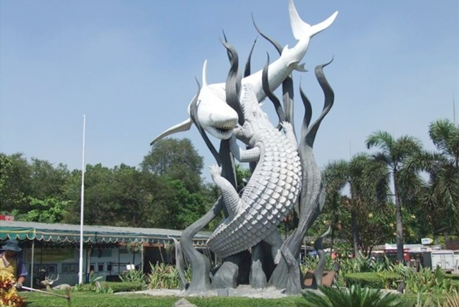
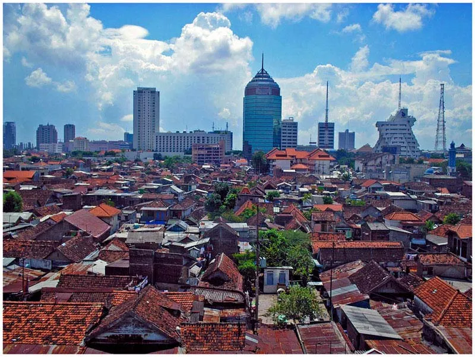

Surabaya, the City of Heroes
Surabaya is the capital of East Java and the second-largest city in Indonesia, a busy port city with a strong sense of history and identity.
Location
East Java province, on the northern coast of Java island, facing the Madura Strait.

Nickname
"Kota Pahlawan" (City of Heroes), symbolized by Suro the shark and Boyo the crocodile.

Population
Around 2.9 million people in the city itself, with millions more in the greater metropolitan area.
Learn more
The name Surabaya is often linked to the legend of a fight between a shark (suro) and a crocodile (boyo), the city's symbol today. Surabaya rose to prominence as a major trading port during the colonial era, and became famous for the Battle of Surabaya on 10 November 1945, one of the fiercest battles of the Indonesian National Revolution. That date is commemorated nationally as Heroes' Day (Hari Pahlawan), which is why Surabaya carries the nickname "City of Heroes."
Most locals speak Javanese (in the direct, expressive "Suroboyoan" dialect) alongside Indonesian. The culture is known for being straightforward, warm, and humorous, reflected in local slang and the city's famous street-side social life.
As Indonesia's second-largest city, Surabaya is a key industrial and trade hub for eastern Indonesia, home to Tanjung Perak, one of the country's busiest seaports, as well as shipbuilding, manufacturing, and a growing services and education sector.
Surabaya has a hot, humid tropical climate year-round, with a distinct dry season (around May–October) and wet season (around November–April), typical of coastal Java.